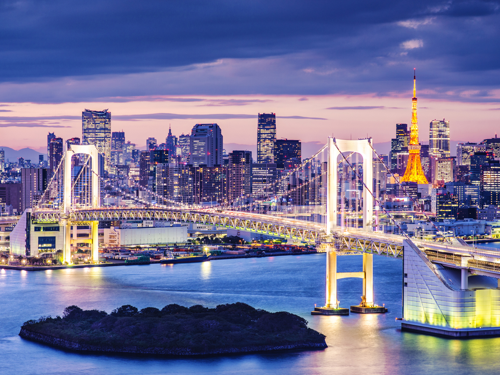
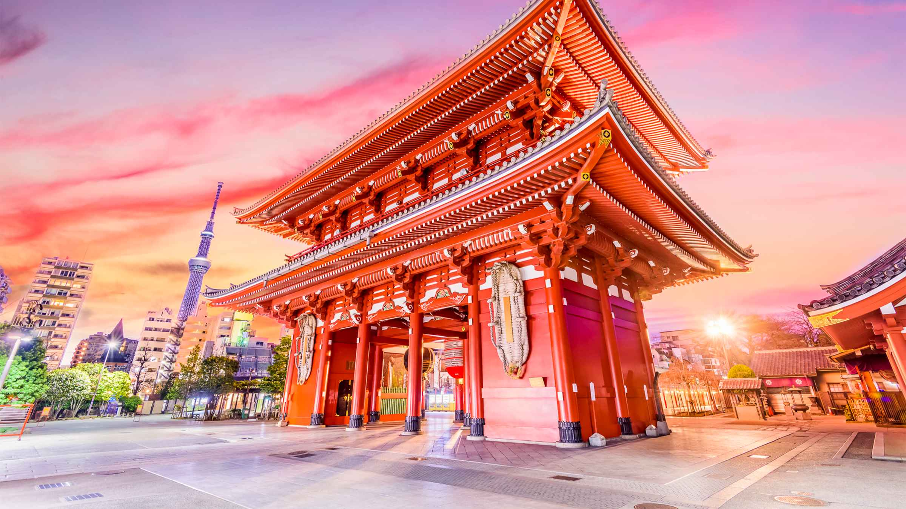

Tóquio é uma cidade que pulsa inovação sem abandonar suas raízes. Entre arranha-céus iluminados e templos centenários, tecnologia de ponta coexiste harmoniosamente com costumes ancestrais. Do cruzamento de Shibuya à serenidade do Senso-ji, cada esquina revela um contraste fascinante. Seja explorando os bairros futuristas ou contemplando a beleza das cerejeiras em flor, Tóquio encanta por sua capacidade única de unir o moderno ao tradicional.